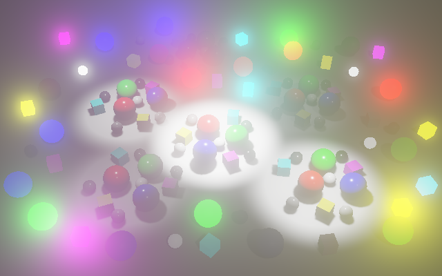
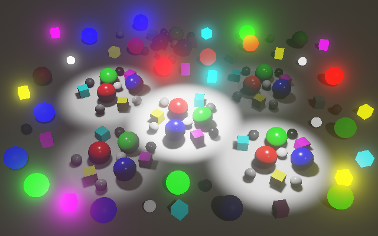
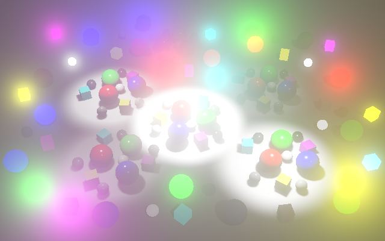
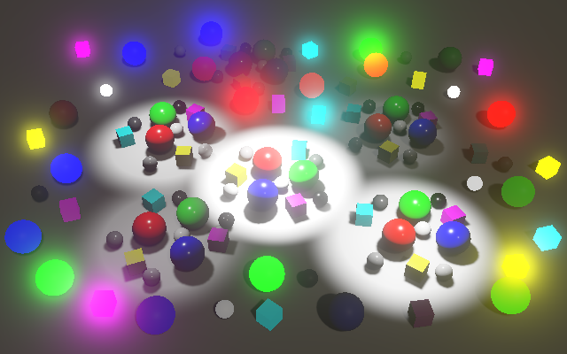
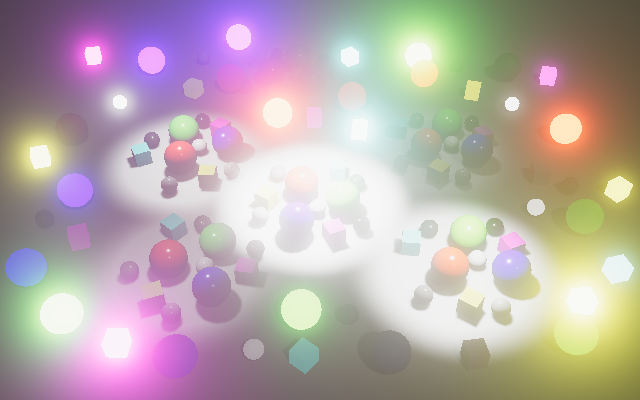
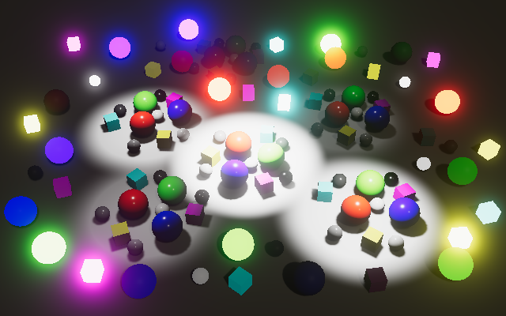

HDR
Scattering and Tone Mapping
- Render to HDR textures.
- Reduce bloom fireflies.
- Add scattering bloom.
- Support multiple tone mapping modes.
This is the 12th part of a tutorial series about creating a custom scriptable render pipeline. It adds support for high-dynamic-range rendering, scatter-based bloom, and tone mapping.
This tutorial is made with Unity 2019.4.8f1.
High Dynamic Range
Up to this point when rendering a camera we've done so in low dynamic color range—LDR for short—which is the default. This means that each color channel is represented with a value that's clamped to 0–1. In this mode (0,0,0) represents black and (1,1,1) represents white. Although our shaders could produce results outside this range the GPU will clamp the color while storing them, as if we used saturate at the end of every fragment function.
You can use the frame debugger to check the type of the render target of each draw call. The target of a normal camera is described as B8G8R8A8_SRGB. This means that it's an RGBA buffer with eight bits per channel, so 32 bits per pixel. Also, the RGB channels are stored in sRGB color space. As we're working in linear color space the GPU automatically converts between both spaces when reading from and writing to the buffer. Once rendering is finished the buffer is send to the display, which interprets it as sRGB color data.
The maximum of 1 per color channel works fine as long as light intensities don't exceed it. But the intensity of incoming light doesn't have an inherent upper bound. The sun is an example of an extremely bright light source, which is why you shouldn't look at it directly. Its intensity is far greater than we can perceive before our eyes get damaged. But many regular light sources also produce light with an intensity that can exceed the limits of the observer, especially when observed up close. to correctly work with such intensities we have to render to high-dynamic-range—HDR—buffers, which support values greater than 1.
HDR Reflection Probes
HDR rendering requires HDR render targets. This doesn't only apply to regular cameras, it's also true for reflection probes. Whether a reflection probe contains HDR or LDR data can be controlled via its HDR toggle option, which is enabled by default.
When a reflection probe uses HDR it can contain high-intensity colors, which are mostly specular reflections that it captured. You can observe them indirectly via the reflections they cause in a scene. Imperfect reflections weaken the probe's colors, which makes HDR values stand out.
HDR Cameras
Cameras also have an HDR configuration option, but it doesn't do anything on its own. It can be set to either Off or Use Graphics Settings.
The Use Graphics Settings mode only indicates that the camera allows HDR rendering. Whether this happens is up to the RP. We'll control that by adding a toggle to CustomRenderPipelineAsset to allow HDR, passing it to the pipeline constructor.
[SerializeField]
bool allowHDR = true;
…
protected override RenderPipeline CreatePipeline () {
return new CustomRenderPipeline(
allowHDR, useDynamicBatching, useGPUInstancing, useSRPBatcher,
useLightsPerObject, shadows, postFXSettings
);
}
Let CustomRenderPipeline keep track of it and pass it to the camera renderer along with the other options.
bool allowHDR;
…
public CustomRenderPipeline (
bool allowHDR,
…
) {
this.allowHDR = allowHDR;
…
}
protected override void Render (
ScriptableRenderContext context, Camera[] cameras
) {
foreach (Camera camera in cameras) {
renderer.Render(
context, camera, allowHDR,
useDynamicBatching, useGPUInstancing, useLightsPerObject,
shadowSettings, postFXSettings
);
}
}
CameraRenderer then keeps track of whether HDR should be used, which is when both the camera and the RP allow it.
bool useHDR;
public void Render (
ScriptableRenderContext context, Camera camera, bool allowHDR,
bool useDynamicBatching, bool useGPUInstancing, bool useLightsPerObject,
ShadowSettings shadowSettings, PostFXSettings postFXSettings
) {
…
if (!Cull(shadowSettings.maxDistance)) {
return;
}
useHDR = allowHDR && camera.allowHDR;
…
}
HDR Render Textures
HDR rendering only makes sense in combination with post processing, because we cannot change the final frame buffer format. So when we create our own intermediate frame buffer in CameraRenderer.Setup we'll use the default HDR format when appropriate, instead of the regular default which is for LDR.
buffer.GetTemporaryRT( frameBufferId, camera.pixelWidth, camera.pixelHeight, 32, FilterMode.Bilinear, useHDR ? RenderTextureFormat.DefaultHDR : RenderTextureFormat.Default );
The frame debugger will show that the default HDR format is R16G16B16A16_SFloat, which means it's an RGBA buffer with 16 bits per channel, so 64 bits per pixel, double the size of the LDR buffer. In this case each value is a signed float in linear space, not clamped to 0–1.
When stepping through draw calls you'll notice that the scene will appear darker than the final result. This happens because those steps are stored in the HDR texture. It appears dark because the linear color data gets displayed as-is, thus incorrectly interpreted as sRGB.
HDR Post Processing
At this point the result doesn't look any different than before, because we're not doing anything with the expanded range and it gets clamped once we render to an LDR target. Bloom might appear a bit brighter, but not much because colors get clamped after the pre-filtering pass. We also have to perform post processing in HDR to take full advantage of it. So let's pass along whether HDR is used when invoking PostFXStack.Setup in CameraRenderer.Render.
postFXStack.Setup(context, camera, postFXSettings, useHDR);
Now PostFXStack can also keep track of whether it should use HDR.
bool useHDR;
…
public void Setup (
ScriptableRenderContext context, Camera camera, PostFXSettings settings,
bool useHDR
) {
this.useHDR = useHDR;
…
}
And we can use the appropriate texture format in DoBloom.
RenderTextureFormat format = useHDR ? RenderTextureFormat.DefaultHDR : RenderTextureFormat.Default;
The difference between HDR and LDR bloom can be dramatic or unnoticeable, depending on how bright the scene is. Often the bloom threshold is set to 1 so only HDR colors contribute to it. This way the glow indicates colors that are too bright for the display.
Because bloom averages colors even a single very bright pixel can end up visually affecting a very large region. You can see this by comparing the pre-filter step with the final result. Even a single pixel can produce a big circular glow.
For example, when a 2×2 block of the values 0, 0, 0, and 1 gets averaged due to downsampling the result will be 0.25. But if the HDR version averages 0, 0, 0, and 10 instead the result would be 2.5. Compared to LDR it appears as if the 0.25 result got boosted to 1.
Fighting Fireflies
A downside of HDR is that it can produce small image regions that are much brighter than their surroundings. When these regions are about the size of a pixel or smaller they can drastically change relative size and pop in and out of existence during to movement, which causes flickering. These regions are known as fireflies. When bloom gets applied to them the effect can become stroboscopic.
Eliminating this problem entirely would require infinite resolution, which isn't possible. The next best thing that we can do is more aggressively blur the image during pre-filtering, to fade out the fireflies. Let's add a toggle option to PostFXSettings.BloomSettings for this.
public bool fadeFireflies;
Add a new pre-filter fireflies pass for this purpose. Once again I won't show adding the pass to the PostFxStack shader an the PostFXStack.Pass enum. Select the appropriate pass for pre-filtering in DoBloom.
Draw( sourceId, bloomPrefilterId, bloom.fadeFireflies ? Pass.BloomPrefilterFireflies : Pass.BloomPrefilter );
The most straightforward way to fade the fireflies is to grow our 2×2 downsample filter of the pre-filtering pass into a large 6×6 box filter. We can do that with nine samples, applying the bloom threshold to each sample individually before averaging. Add the required BloomPrefilterFirefliesPassFragment function for that to PostFXStackPasses.
float4 BloomPrefilterFirefliesPassFragment (Varyings input) : SV_TARGET {
float3 color = 0.0;
float2 offsets[] = {
float2(0.0, 0.0),
float2(-1.0, -1.0), float2(-1.0, 1.0), float2(1.0, -1.0), float2(1.0, 1.0),
float2(-1.0, 0.0), float2(1.0, 0.0), float2(0.0, -1.0), float2(0.0, 1.0)
};
for (int i = 0; i < 9; i++) {
float3 c =
GetSource(input.screenUV + offsets[i] * GetSourceTexelSize().xy * 2.0).rgb;
c = ApplyBloomThreshold(c);
color += c;
}
color *= 1.0 / 9.0;
return float4(color, 1.0);
}
But this isn't enough to solve the problem, as the very bright pixels just get spread out over a larger area. To fade the fireflies we'll use a weighed average instead, based on the color's luminance. A color's luminance is its perceived brightness. We'll use the Luminance function for this, defined in the Color HLSL file of the Core Library.
#include "Packages/com.unity.render-pipelines.core/ShaderLibrary/Color.hlsl" #include "Packages/com.unity.render-pipelines.core/ShaderLibrary/Filtering.hlsl"
A sample's weight is `1/(l+1)` with `l` its luminance. Thus for luminance 0 the weight is 1, for luminance 1 the weight is ½, for 3 it's ¼, for 7 it's ⅛, and so on.
At the end we divide the sample sum by the sum of those weights. This effectively spreads out the brightness of the fireflies across all other samples. If those other samples are dark the firefly fades. For example, the weighed average of 0, 0, 0, and 10 is `(10/11)/(3+1/11)=110/374~~0.29`.
float4 BloomPrefilterFirefliesPassFragment (Varyings input) : SV_TARGET {
float3 color = 0.0;
float weightSum = 0.0;
…
for (int i = 0; i < 9; i++) {
…
float w = 1.0 / (Luminance(c) + 1.0);
color += c * w;
weightSum += w;
}
color /= weightSum;
return float4(color, 1.0);
}
Because we perform a Gaussian blur after the initial pre-filtering step we can get away with skipping the four samples directly adjacent to the center, reducing the amount of samples from nine to five.
float2 offsets[] = {
float2(0.0, 0.0),
float2(-1.0, -1.0), float2(-1.0, 1.0), float2(1.0, -1.0), float2(1.0, 1.0)//,
//float2(-1.0, 0.0), float2(1.0, 0.0), float2(0.0, -1.0), float2(0.0, 1.0)
};
for (int i = 0; i < 5; i++) { … }
This will turn single-pixel fireflies into ×-shape patterns and split single-pixel horizontal or vertical lines into two separate lines in the pre-filtering step, but after the first blur step those patterns are gone.
This doesn't completely eliminate the fireflies but reduces their strength so much that they are no longer glaringly obvious, unless the bloom intensity is set much higher than 1.
Scattering Bloom
Now that we have HDR bloom let's consider a more realistic application of it. The idea is that cameras aren't perfect. Their lenses don't focus all light correctly. A portion of the light gets scattered over a larger area, somewhat like our bloom effect does currently. The better a camera the less it scatters. The big difference with our additive bloom effect is that scattering doesn't add light, it only diffuses it. Scattering can visually vary from a slight glow to a light haze that veils the entire image.
Eyes also aren't perfect and light gets scattered inside them in a complex way. It happens with all incoming light, but is only really noticeable when it is bright. For example, it is obvious when looking at a small bright light source against a dark background, like a lantern at night, or the sun's reflection on a bright day.
Instead of a uniform circular blurry glow we'll see many-pointed asymmetrical start-like patterns which also have hue shifts, unique to our own eyes. But our bloom effect will represent a featureless camera with uniform scattering.
Bloom Mode
We're going to support both classical additive and energy-conserving scattering bloom. Add an enum option for these modes to PostFXSettings.BloomSettings. Also add a 0–1 slider to control how much the light gets scattered.
public enum Mode { Additive, Scattering }
public Mode mode;
[Range(0f, 1f)]
public float scatter;
Rename the existing BloomCombine pass to BloomAdd and introduce a new BloomScatter pass. Make sure that the enum and pass order remain alphabetical. Then use the appropriate pass in DoBloom during the combine phase. In the case of scattering we'll use the scatter amount for intensity instead of 1. We still use the configured intensity for the final draw.
Pass combinePass;
if (bloom.mode == PostFXSettings.BloomSettings.Mode.Additive) {
combinePass = Pass.BloomAdd;
buffer.SetGlobalFloat(bloomIntensityId, 1f);
}
else {
combinePass = Pass.BloomScatter;
buffer.SetGlobalFloat(bloomIntensityId, bloom.scatter);
}
if (i > 1) {
buffer.ReleaseTemporaryRT(fromId - 1);
toId -= 5;
for (i -= 1; i > 0; i--) {
buffer.SetGlobalTexture(fxSource2Id, toId + 1);
Draw(fromId, toId, combinePass);
…
}
}
else {
buffer.ReleaseTemporaryRT(bloomPyramidId);
}
buffer.SetGlobalFloat(bloomIntensityId, bloom.intensity);
buffer.SetGlobalTexture(fxSource2Id, sourceId);
Draw(fromId, BuiltinRenderTextureType.CameraTarget, combinePass);
The function for the BloomScatter pass is the same as the one for BloomAdd, except that it interpolates between the high-resolution and low-resolution sources based on intensity, instead of adding them. Thus a scatter amount of zero means that only the lowest bloom pyramid level is used while scatter 1 means that only the highest is used. At 0.5 the contributions of successive levels end up as 0.5, 0.25, 0.125, 0.125 in case of four levels.
float4 BloomScatterPassFragment (Varyings input) : SV_TARGET {
float3 lowRes;
if (_BloomBicubicUpsampling) {
lowRes = GetSourceBicubic(input.screenUV).rgb;
}
else {
lowRes = GetSource(input.screenUV).rgb;
}
float3 highRes = GetSource2(input.screenUV).rgb;
return float4(lerp(highRes, lowRes, _BloomIntensity), 1.0);
}
Scattering bloom doesn't brighten the image. It might appear to darken the above example, but that's because it only shows a cropped portion of the original. The energy conservation isn't perfect however, because the Gaussian filter gets clamped to the edge of the image, which means that the contribution of the edge pixels is magnified. We could compensate for that, but won't because it's usually not obvious.
Scatter Limits
Because scatter values of 0 and 1 eliminate all but one pyramid level it doesn't make sense to use those values. So let's reduce the scatter slider's range to 0.05–0.95. This makes the default value of zero invalid, so explicitly initialize BloomSettings with a value. Let's use 0.07, which is the same scatter default that URP and HDRP use.
public struct BloomSettings {
…
[Range(0.05f, 0.95f)]
public float scatter;
}
[SerializeField]
BloomSettings bloom = new BloomSettings {
scatter = 0.7f
};
Also, an intensity greater than 1 is inappropriate for scattering bloom, as that would add light. So we'll clamp it in DoBloom, limiting the maximum to 0.95 so the original image will always contribute something to the result.
float finalIntensity;
if (bloom.mode == PostFXSettings.BloomSettings.Mode.Additive) {
combinePass = Pass.BloomAdd;
buffer.SetGlobalFloat(bloomIntensityId, 1f);
finalIntensity = bloom.intensity;
}
else {
combinePass = Pass.BloomScatter;
buffer.SetGlobalFloat(bloomIntensityId, bloom.scatter);
finalIntensity = Mathf.Min(bloom.intensity, 0.95f);
}
if (i > 1) {
…
}
else {
buffer.ReleaseTemporaryRT(bloomPyramidId);
}
buffer.SetGlobalFloat(bloomIntensityId, finalIntensity);
Threshold
Scattering bloom is far subtler than additive bloom. It's typically also used with low intensities. This means that—just like with real cameras—the bloom effect is only really obvious for very bright light, even though all light gets scattered.
Although it's not realistic, it's still possible to apply a threshold to eliminate scattering for darker pixels. This can keep the image sharp when using stronger bloom. However, this eliminates light and thus darkens the image.
We have to compensate for the missing scattered light. We do this by creating an extra BloomScatterFinal pass that we use for the final draw of scattering bloom.
Pass combinePass, finalPass;
float finalIntensity;
if (bloom.mode == PostFXSettings.BloomSettings.Mode.Additive) {
combinePass = finalPass = Pass.BloomAdd;
buffer.SetGlobalFloat(bloomIntensityId, 1f);
finalIntensity = bloom.intensity;
}
else {
combinePass = Pass.BloomScatter;
finalPass = Pass.BloomScatterFinal;
buffer.SetGlobalFloat(bloomIntensityId, bloom.scatter);
finalIntensity = Mathf.Min(bloom.intensity, 1f);
}
…
Draw(fromId, BuiltinRenderTextureType.CameraTarget, finalPass);
}
The function for this pass is a copy of the other scatter pass function, with one difference. It adds the missing light to the low-resolution pass, by adding the high-resolution light and then subtracting it again but with the bloom threshold applied to it. This isn't a perfect reconstruction—it isn't a weighed average and ignores light lost due to fading fireflies—but is close enough and doesn't add light to the original image.
float4 BloomScatterFinalPassFragment (Varyings input) : SV_TARGET {
float3 lowRes;
if (_BloomBicubicUpsampling) {
lowRes = GetSourceBicubic(input.screenUV).rgb;
}
else {
lowRes = GetSource(input.screenUV).rgb;
}
float3 highRes = GetSource2(input.screenUV).rgb;
lowRes += highRes - ApplyBloomThreshold(highRes);
return float4(lerp(highRes, lowRes, _BloomIntensity), 1.0);
}
Tone Mapping
Although we can render in HDR the final frame buffer is always LDR for regular cameras. Thus color channels get cut off at 1. Effectively the white point of the final image is at 1. Extremely bright colors end up looking no different than those what are fully saturated. For example, I made a scene with multiple light levels and objects with various amounts of emission, far exceeding 1. The strongest emission is 8 and the brightest light has intensity 200.
Without applying any post FX it is hard and even impossible to tell which objects and lights are the very bright ones. We can use bloom to make this obvious. For example, I used threshold 1, knee 0.5, intensity 0.2, and scatter 0.7 with max iterations.
The glowing objects are clearly supposed to be bright, but we still don't get a sense of how bright they are relative to the rest of the scene. To do so we'd need to adjust the brightness of the image—increasing its white point—so the brightest colors no longer exceed 1. We could do that by uniformly darkening the entire image, but that would make most of it so dark that we wouldn't be able to clearly see it. Ideally we adjust the very bright colors a lot while adjusting dark colors only a little. Thus we need a nonuniform color adjustment. This color adjustment doesn't represent a physical change of the light itself, but how it is observed. For example, our eyes are more sensitive to darker tones than lighter ones.
Conversion from HDR to LDR is known as tone mapping, which comes from photography and film development. Traditional photos and film also have a limited range and nonuniform light sensitivity, so many techniques have been developed to perform the conversion. There is no single correct way to perform tone mapping. Different approaches can be used to set the mood of the final result, like a classical filmic look.
Extra Post FX Step
We perform tone mapping in a new post FX step after bloom. Add a DoToneMapping method to PostFXStack for this purpose, which initially just copies a source to the camera target.
void DoToneMapping(int sourceId) {
Draw(sourceId, BuiltinRenderTextureType.CameraTarget, Pass.Copy);
}
We need to adjust the result of bloom, so get a new full-resolution temporary render texture and use it as the final destination in DoBloom. Also make it return whether it drew anything, instead of directly drawing to the camera target when the effect is skipped.
int
bloomBicubicUpsamplingId = Shader.PropertyToID("_BloomBicubicUpsampling"),
bloomIntensityId = Shader.PropertyToID("_BloomIntensity"),
bloomPrefilterId = Shader.PropertyToID("_BloomPrefilter"),
bloomResultId = Shader.PropertyToID("_BloomResult"),
…;
…
bool DoBloom (int sourceId) {
//buffer.BeginSample("Bloom");
PostFXSettings.BloomSettings bloom = settings.Bloom;
int width = camera.pixelWidth / 2, height = camera.pixelHeight / 2;
if (
bloom.maxIterations == 0 || bloom.intensity <= 0f ||
height < bloom.downscaleLimit * 2 || width < bloom.downscaleLimit * 2
) {
//Draw(sourceId, BuiltinRenderTextureType.CameraTarget, Pass.Copy);
//buffer.EndSample("Bloom");
return false;
}
buffer.BeginSample("Bloom");
…
buffer.SetGlobalFloat(bloomIntensityId, finalIntensity);
buffer.SetGlobalTexture(fxSource2Id, sourceId);
buffer.GetTemporaryRT(
bloomResultId, camera.pixelWidth, camera.pixelHeight, 0,
FilterMode.Bilinear, format
);
Draw(fromId, bloomResultId, finalPass);
buffer.ReleaseTemporaryRT(fromId);
buffer.EndSample("Bloom");
return true;
}
Adjust Render so it performs tone mapping on the bloom result if bloom if active and then release the bloom result texture. Otherwise have it apply tone mapping on the original source directly, skipping bloom entirely.
public void Render (int sourceId) {
if (DoBloom(sourceId)) {
DoToneMapping(bloomResultId);
buffer.ReleaseTemporaryRT(bloomResultId);
}
else {
DoToneMapping(sourceId);
}
context.ExecuteCommandBuffer(buffer);
buffer.Clear();
}
Tone Mapping Mode
There are multiple approaches to tone mapping and we'll support a few, so add a ToneMappingSettings configuration struct to PostFXSettings, with a Mode enum option that initially only contains None.
[System.Serializable]
public struct ToneMappingSettings {
public enum Mode { None }
public Mode mode;
}
[SerializeField]
ToneMappingSettings toneMapping = default;
public ToneMappingSettings ToneMapping => toneMapping;
Reinhard
The goal of our tone mapping is to reduce the brightness of the image so that otherwise uniform white regions show a variety of colors, revealing the details that were otherwise lost. It's like when your eyes adjust to a suddenly bright environment until you can see clearly again. But we don't want to scale down the entire image uniformly, because that would make darker colors indistinguishable, trading over-brightness for underexposure. So we need a nonlinear conversion that doesn't reduce dark values much but reduces high values a lot. At the extremes, zero remains zero and a value that approaches infinity is reduced to 1. A simple function that accomplishes that is `c/(1+c)` where `c` is a color channel. This function is known as the Reinhard tone mapping operation in its simplest form, initially proposed by Mark Reinhard, except that he applied it to luminance while we'll apply it to each color channel in isolation.
Add an option for Reinhard to ToneMappingSettings.Mode, after None. Then make the enum start at −1 so the Reinhard value is zero.
public enum Mode { None = -1, Reinhard }
Next, add a ToneMappingReinhard pass and make PostFXStack.DoTonemapping use it when appropriate. Specifically, perform a simply copy if the mode is negative, otherwise apply Reinhard tone mapping.
void DoToneMapping(int sourceId) {
PostFXSettings.ToneMappingSettings.Mode mode = settings.ToneMapping.mode;
Pass pass = mode < 0 ? Pass.Copy : Pass.ToneMappingReinhard;
Draw(sourceId, BuiltinRenderTextureType.CameraTarget, pass);
}
The ToneMappingReinhardPassFragment shader function simply applies the function.
float4 ToneMappingReinhardPassFragment (Varyings input) : SV_TARGET {
float4 color = GetSource(input.screenUV);
color.rgb /= color.rgb + 1.0;
return color;
}
 
This works, but could go wrong for very large values due to precision limitations. For the same reason very large values end up at 1 much earlier than infinity. So let's clamp the color before performing tone mapping. A limit of 60 avoids any potential issues for all modes that we will support.
color.rgb = min(color.rgb, 60.0); color.rgb /= color.rgb + 1.0;
Neutral
The white point of Reinhard tone mapping is theoretically infinite, but it can be adjusted so the maximum is reached earlier, which weakens the adjustment. This alternative function is `c(1+c/w^2)/(1+c)` where `w` is the white point.
We could add a configuration option for this, but Reinhard is not the only function that we can use. A more interesting one that gets used a lot is `t(x)=(x(ax+cb)+de)/(x(ax+b)+df)-e/f`. In this case `x` is an input color channel and the other values are constants that configure the curve. The final color is then `(t(ce))/(t(w))`, with `c` a color channel, `e` an exposure bias, and `w` the white point. It can produce an s-curve that has a toe region that curves upward from black to a linear section in the middle, ending with a shoulder region that flattens as it approaches white.
The above function was designed by John Hable. It was first used in Uncharted 2 (see slides 142 and143).
The URP and HDRP use a variant of this function with their own configuration values and a white point of 5.3, but they also use the white scale for the exposure bias, so the final curve is `(t(c/(t(w))))/(t(w))`. This results in an effective white point of roughly 4.035. It's used for the neutral tone mapping option and is available via the NeutralTonemap function in the Color Core Library HLSL file.
Let's add an option for this tone mapping mode. Put it after None and before Reinhard in the Mode enum.
public enum Mode { None = -1, Neutral, Reinhard }
Then create another pass for it. PostFXStack.DoToneMapping can now find the correct pass by adding the mode to the neutral option if it's something other than None.
Pass pass = mode < 0 ? Pass.Copy : Pass.ToneMappingNeutral + (int)mode;
The ToneMappingNeutralPassFragment function then only has to invoke NeutralTonemap.
float4 ToneMappingNeutralPassFragment (Varyings input) : SV_TARGET {
float4 color = GetSource(input.screenUV);
color.rgb = min(color.rgb, 60.0);
color.rgb = NeutralTonemap(color.rgb);
return color;
}
 
You could add configuration options to tweak your own curve, but we'll move on to our final tone mapping mode.
ACES
The last mode that we'll support in this tutorial is ACES tone mapping, which URP and HDRP also use. ACES is shorthand for the Academy Color Encoding System, a global standard for interchanging digital image files, managing color workflows and creating masters for delivery and archiving. We'll only use its tone mapping approach, as implemented by Unity.
First, add it to the Mode enum, directly after None to keep the rest in alphabetical order.
public enum Mode { None = -1, ACES, Neutral, Reinhard }
Add the pass and adjust PostFXStack.DoToneMapping so it starts with ACES.
Pass pass = mode < 0 ? Pass.Copy : Pass.ToneMappingACES + (int)mode;
The new ToneMappingACESPassFragment function can simply use the AcesTonemap function from the Core Library. It's included via Color but there's a separate ACES HLSL file that you can investigate. The input color of the function has to be in ACES color space, for which we can use the unity_to_ACES function.
float4 ToneMappingACESPassFragment (Varyings input) : SV_TARGET {
float4 color = GetSource(input.screenUV);
color.rgb = min(color.rgb, 60.0);
color.rgb = AcesTonemap(unity_to_ACES(color.rgb));
return color;
}
 
The most obvious difference between ACES and the other modes is that it adds a hue shift to very bright colors, pushing them toward white. This also happens when cameras or eyes get overwhelmed by too much light. Combined with bloom it is now clear which surfaces are brightest. Also, ACES tone mapping decreases the darker colors a bit, which enhances contrast. The result is a filmic look.
The next tutorial is Color Grading.